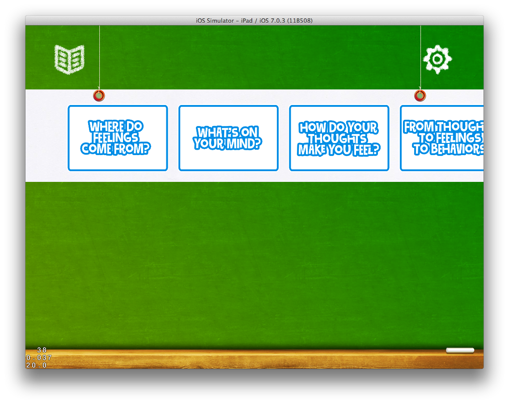
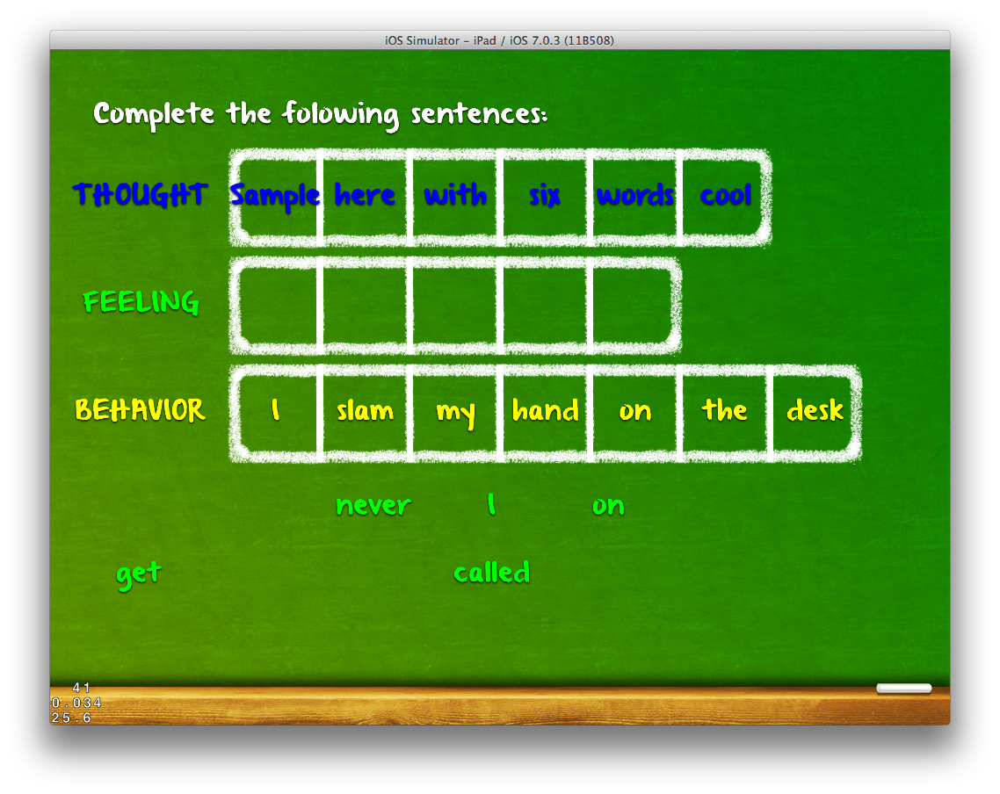
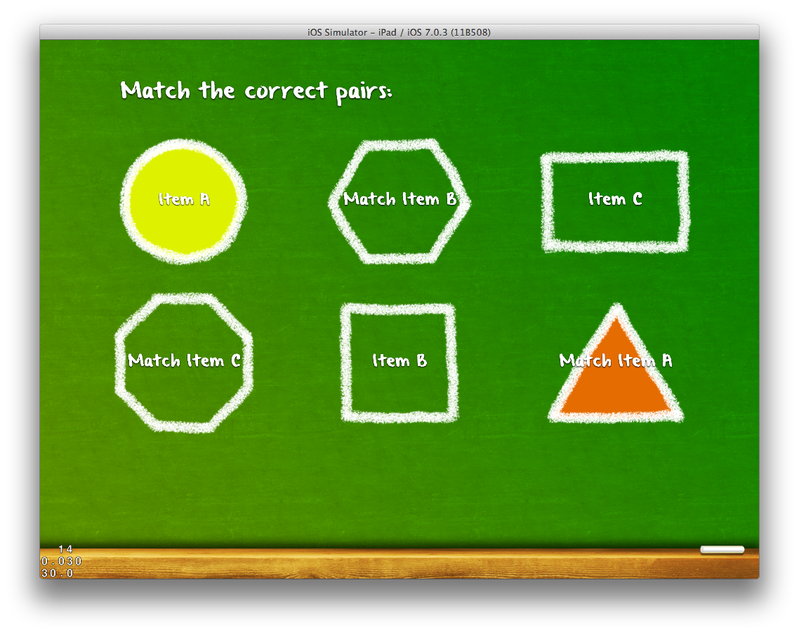

The following Images were taken directly out of the game running on an iPad (in this case the iPad Simulator). Below each image is a text description about what you are seeing.
This is the startup screen. I'm working on a new version with the Roller coaster inlace of this, but it's not in the actual game yet.
This is the main menu. You can access Settings and a Chapter select from the icons at the top. The Play button at the bottom will start at Activity 1.

This is where you can select a chapter, the list scrolls to the left and right.
This is the first page of Introduction text. There is an intro page before each Activity.
This is the 2nd intro page, this is where the large graphic is going (that's why it is blank, the graphics haven't been added to the game yet).
This is the first question in Activity 1. You drag the right emotion to the right character. The characters come in from the left and right into position. It will play a Firework particle when you get one right.
Once you get all the questions right, a Next button appears. When you get a question wrong, the character will shake, and the choice you selected will return to it's original location on the board.

This is the 2nd Question on activity 1.

The fire work particles in action. It's hard to grab a screenshot. Please not, it's not a final design, just a test particle to make sure it works.
The 3rd question in Activity 1.
The 4th question in Activity 1.
The 5th question in Activity 1.
The 6th question in Activity 1, transforms into a sentence with the feelings surrounding it.
The 7th question in Activity 1.
The 8th question in Activity 1.
The 9th question in Activity 1.
The 10th question in Activity 1.
The 11th question in Activity 1.
The 12th question in Activity 1.
The 13th question in Activity 1.
The 14th question in Activity 1.
The 15th question in Activity 1.
The 16th question in Activity 1.
This is Activity 2. Right now it's just using assets from Activity 1, as I get the positions correct. Then I will put in the Activity 2 Assets. The activity will list 5 questions on the Left, and 5 answers on the right, and you have to match them in the right order. Again, pay no attention to the actual images in this, it's all about making the logic work.
Introduction text for Activity 3. Just like all activities, it will be followed by an image.
The 1st question for Activity 3.
The 2nd question for Activity 3.
The 3rd question for Activity 3.
The 4th question for Activity 3.
The 5th question for Activity 3.
Introduction screen for Activity 4. Will be followed by a 2nd screen with an image.
The 1st question for Activity 4. It builds out boxes to place the individual words (or groups of words if needed) into each box. The scaling needs to be adjusted.
This is what a completed question in Activity 4 looks like.

Working on the spacing, and selections in Activity 4. It is ready now for the actual game data.
This is the 5th activity (and it has an intro with an image first). Different phrases/words go in the shapes. Tap on one and it starts to pulse, tap on the right 2nd one and they complete.

Two matched items for the 5th activity. When matched the circles fill in with a color.
A completed Activity 5.
These Next Images, are being implemented, these are the sketches of how they should work in game.

This is the first version of the Question and Answer mode. This puts an question in the center, and images with captions around it.

This version of the Question and Answer mode will have single question question in text, and several answers around it. This will power the final activity.
This mode, presents a question with an image and a caption in the center of the screen and several possible answers around it. Correct answers highlight green, incorrect answers turn red. It takes 5 correct answers to correctly complete this activity.
The only remaining Activity not present in this list, is the "Slide Show" activity, where it presents an image and text, and a Next Button. That is going into the program last.